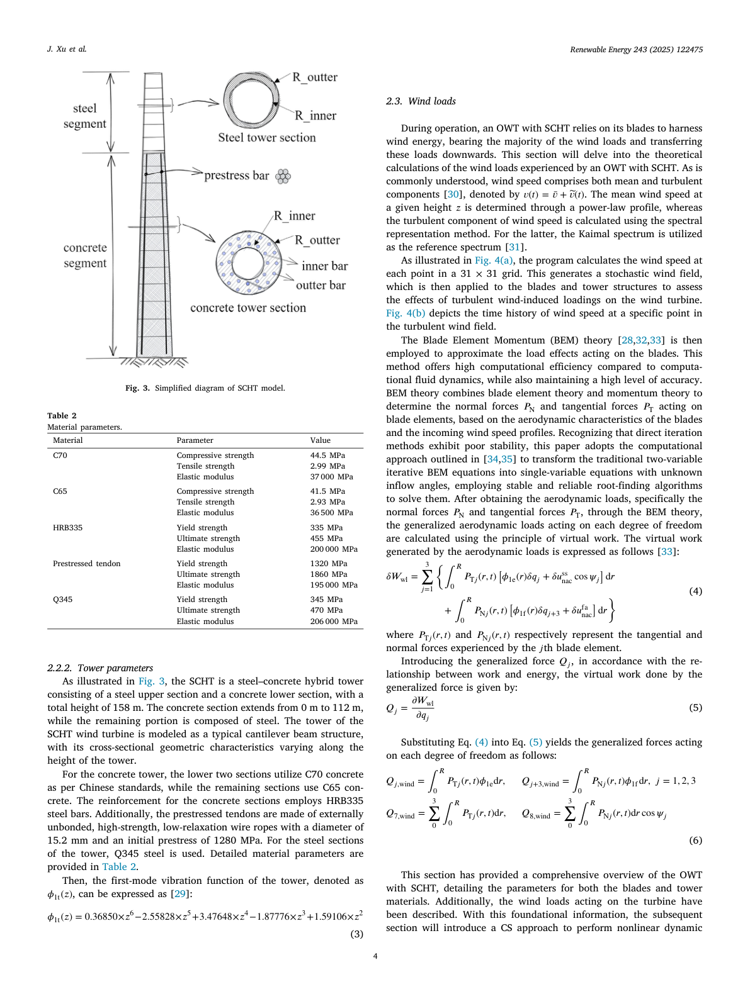

REV22 五项核查
HE_REV22_FULL_ASSEMBLY_EQ005 · V1.3 · 原生求解未验收
第二章图件对照
包含材料本构、网格与循环、钢筋及接缝分析。原生结果缺项如实标记。
文献与处理决定
| 问题 | 决定 | 依据 |
|---|---|---|
| 混凝土接缝 | Hard Contact／Penalty／μ=0.5 | Tan等2025 §4.2 |
| CDP | 先核原始曲线；完整拉压及损伤曲线须单元验证 | Xu等2025 表2 · Li等2020 · Abaqus CDP |
| 法兰 | 整体Tie基准保留；真实构造未核，不虚构螺栓；0.4仅为另一工程钢-钢面参考 | Dong等2025 · Wang等2025 |
| 地震 | 固定底部，相对坐标惯性载荷；检查全部DLOAD与幅值 | Abaqus Distributed Loads |
| RNA | 柔性梁、分布质量和惯量；不改为实体 | Ali等2021 |
原始INP核查结果
尚未取得机器审计结果；正在读取归档结果。
下载原字节审计脚本 · 研发白皮书C65/C70 材料本构曲线


下载曲线原始数值 CSV · 下载矢量图 SVG · 下载CAE导出核对程序
| 参数 | C65 | C70 |
|---|---|---|
| 抗压峰值 / MPa | 41.5 | 44.5 |
| 抗拉峰值 / MPa | 2.93 | 2.99 |
| 受压峰值应变 | 0.001808 | 0.001844 |
| 受拉峰值应变 | 0.00011646 | 0.00011778 |
| 受压下降段参数 | 2.021 | 2.183 |
| 受拉下降段参数 | 2.6896 | 2.7928 |
96个非首行应力点的复算误差小于0.0001 Pa；100个损伤点的误差小于1.1×10⁻¹²。原生单轴/循环与网格验证尚未完成。
对象级期刊原页
Xu等，Renewable Energy 243 (2025) 122475，第4页，图3及表2。该研究使用OpenSEES梁模型，不直接提供完整Abaqus CDP输入。

原生验收边界
本页不将静态关键字审计等同于Abaqus求解。需由Codex导出当前CAE输入对照，并完成Data Check、材料单元验证、预应力/重力平衡、模态及地震响应验证。原始REV22未覆盖。